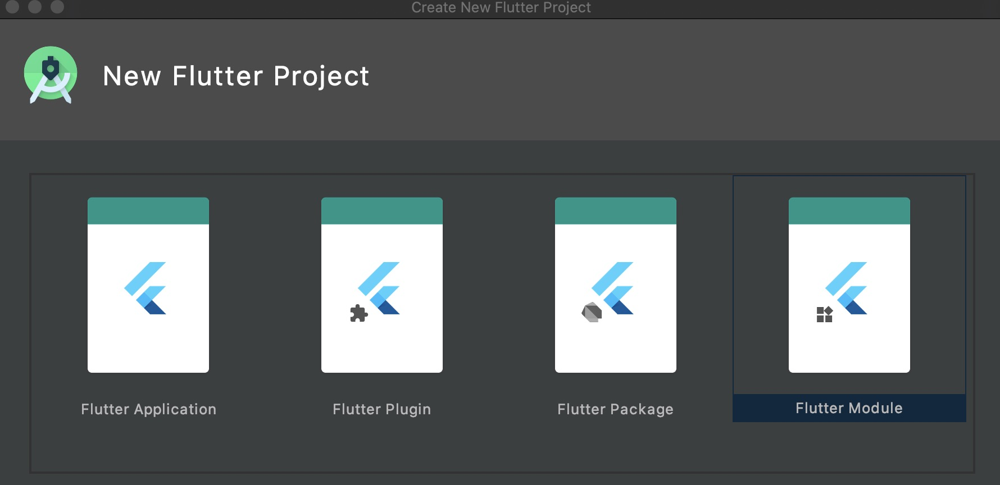

将Flutter添加到已有的项目中
查看了网上各种方案也包括闲鱼团队的开源flutter_boot，都各有缺点。鉴于各种方案都需要制定相应的Flutter版本，考虑到Flutter更新速度，于是决定依靠官方的产物集成方式解决混合开发的问题，并进行远程SDK管理。
Flutter构建模式
你可以在官方DOCS中看到详细介绍，下文打包命令都会产出对应三种模式的包以便满足各场景需要，我们简单记录下来：
Debug
Debug模式下，app可以被安装在物理设备、仿真器或者模拟器上进行调试。
- 热重载仅能在Debug模式下运行
- 仿真器、模拟器仅能在Debug模式下运行
- Debug模式下，APP性能可能会掉帧或者卡顿
Profile
Profile模式下，一些调试能力是被保留的——足够分析你的app性能。在仿真器和模拟器上，Profile模式是不可用的。
Release
Release模式对快速启动、快速执行和package的大小进行了优化，并禁用了调试、服务扩展等功能，Release模式做到了最大的优化以及最小的占用空间。
如上三种模式可以通过以下命令运行到设备上：
flutter run --release
flutter run --profile
flutter run --debug
##iOS - 以framework的形式添加到你的既有iOS应用中，并上传CocoaPods
创建Flutter module
你可以在Android Studio中创建

也可以通过命令行
flutter create --template module my_flutter
此module并不是Android里的模块或者iOS里的组件，而是Google提供的一种创建模式，可以独立运行。
产物集成
flutter build ios-framework --output=somePath/
产物目录结构如下：
somePath/
└── Flutter/
├── Debug/
│ ├── Flutter.framework
│ ├── App.framework
│ ├── FlutterPluginRegistrant.framework (only if you have plugins with iOS platform code)
│ └── example_plugin.framework (each plugin is a separate framework)
├── Profile/
│ ├── Flutter.framework
│ ├── App.framework
│ ├── FlutterPluginRegistrant.framework
│ └── example_plugin.framework
└── Release/
├── Flutter.framework
├── App.framework
├── FlutterPluginRegistrant.framework
└── example_plugin.framework
Flutter.framework有400M-500M，并且不会经常变动，下文的pod lib处理中我们需要为它单独创建一个pod，剩下的framwork每次新增插件或变更代码都会跟着变动，放在一个pod。
cocoapods+git管理
podfile无法直接引用framework，需要一个pod作为中转。首先我们需要依次进行如下操作：
- 创建一个名为flutter-plugin-lib私有库
pod lib create flutter-plugin-lib
- 打开flutter-plugin-lib.podspec，在end前加入：
s.ios.vendored_frameworks = 'flutter_frameworks/App.framework',
'flutter_frameworks/FlutterPluginRegistrant.framework',
'flutter_frameworks/shared_preferences.framework'
- 在根目录创建flutter_frameworks文件夹，把刚生成Release的framework除去Flutter.framework cv过来。
- 创建git仓库并上传到云端。
git init
git remote add origin http://xxx/flutter-plugin-lib.git
git add .
git commit -m "xxx"
git push -u origin master
- 在需要混编Flutter的native项目的podfile中添加：
pod 'flutter-plugin-lib', :git => 'http://xxx/flutter-plugin-lib' :tag => 'v1.0.0'
- 同步cocoapods
pod install
- Flutter.framework处理方案如上。
至此，完成了引入所有的frameworks，并且不需要组内其他成员在本地安装Flutter SDK和Cocoapods。
验证
AppDelegate.swift
import UIKit
import Flutter
import FlutterPluginRegistrant
@UIApplicationMain
class AppDelegate: FlutterAppDelegate {
lazy var flutterEngine = FlutterEngine(name: "sup flutter engine")
override func application(_ application: UIApplication,didFinishLaunchingWithOptions launchOptions: [UIApplication.LaunchOptionsKey: Any]?) -> Bool {
flutterEngine.run()
GeneratedPluginRegistrant.register(with: self.flutterEngine)
return super.application(application, didFinishLaunchingWithOptions: launchOptions)
}
}
ViewController.swift
import UIKit
import Flutter
class ViewController: UIViewController {
override func viewDidLoad() {
super.viewDidLoad()
let button = UIButton(type: UIButton.ButtonType.custom)
button.addTarget(self, action: #selector(showFlutter), for: .touchUpInside)
button.setTitle("Show Flutter!", for: UIControl.State.normal)
button.frame = CGRect(x: 80.0, y: 200.0, width: 160.0, height: 40.0)
button.backgroundColor = UIColor.blue
self.view.addSubview(button)
self.view.backgroundColor = UIColor.white
}
@objc func showFlutter() {
present(FlutterViewController(engine: (UIApplication.shared.delegate as! AppDelegate).flutterEngine, nibName: nil, bundle: nil),animated: true,completion: nil)
}
}
Android-以aar的形式上传到私有maven/本地依赖
创建Flutter module
你可以在上述iOS所创建的module中继续开发。
产物集成
flutter build aar
产物目录结构如下：
build/host/outputs/repo
└── com
└── example
└── my_flutter
├── flutter_release
│ ├── 1.0
│ │ ├── flutter_release-1.0.aar
│ │ ├── flutter_release-1.0.aar.md5
│ │ ├── flutter_release-1.0.aar.sha1
│ │ ├── flutter_release-1.0.pom
│ │ ├── flutter_release-1.0.pom.md5
│ │ └── flutter_release-1.0.pom.sha1
│ ├── maven-metadata.xml
│ ├── maven-metadata.xml.md5
│ └── maven-metadata.xml.sha1
├── flutter_profile
│ ├── ...
└── flutter_debug
└── ...
maven管理
你可以按照google DOCS 中描述的方式在本地依赖aar。
android {
// ...
}
repositories {
maven {
url 'somepath/my_flutter/build/host/outputs/repo'
// This is relative to the location of the build.gradle file
// if using a relative path.
}
maven {
url 'https://storage.googleapis.com/download.flutter.io'
}
}
dependencies {
// ...
debugImplementation 'com.example.flutter_module:flutter_debug:1.0'
profileImplementation 'com.example.flutter_module:flutter_profile:1.0'
releaseImplementation 'com.example.flutter_module:flutter_release:1.0'
}
但是这样对native开发组员来说接入成本还是过高，于是我考虑到用maven私服管理的方式处理依赖，当然首先公司应该有服务器，以下基于mac搭建maven仓库：
brew install nexus
nexus start
>>http://localhost:8081/nexus/
nexus stop
在flutter module中编写sh脚本处理上传动作：
#!/bin/bash
flutter clean
flutter build aar
# 定义用于aar、pom文件目录存放的数组
aars=()
poms=()
# 指定打包后本地仓库的目录，由于这里将此脚本放在flutter module根目录，因此直接配置了flutter module根目录下相对目录
targetPath="build/host/outputs/repo"
# 定义遍历找到所有pom文件和aar文件的函数
# 参数$1：当前查找的目录名
function findAarPom(){
echo "查找此目录是否有aar及pom：$1"
targetDir=`ls $1`
for fileName in $targetDir
do
if [[ -d $1"/"$fileName ]]; then
# 还是目录，则递归找下一级
findAarPom $1"/"$fileName
else
# 如果是文件，判断后缀，如果符合期望，则将文件路径拼接好放于对应数组最后一位
if [[ ${fileName:0-4} == '.aar' ]]; then
aars[${#aars[@]}]=$1"/"$fileName
elif [[ ${fileName:0-4} == '.pom' ]]; then
poms[${#poms[@]}]=$1"/"$fileName
fi
fi
done
}
findAarPom $targetPath
echo "============"
echo "aar有：《共${#aars[@]}个》"
echo "${aars[@]}"
echo "pom有：《共${#poms[@]}个》"
echo "${poms[@]}"
echo "============"
# 一个aar文件必然对应会有一个pom文件，如果数量不对，一定是打包出错
if [[ ${#aars[@]} -ne ${#poms[@]} ]]; then
echo "-- !!! pom文件与aar不对称，请检查aar打包配置，上传任务 退出 !!! --"
exit 1
fi
if [[ ${#aars[@]} == 0 ]]; then
echo "-- !!! 未找到aar文件，请检查aar打包配置，上传任务 退出 !!! --"
exit 1
fi
# 定义将目标pom及aar上传到maven指定仓库的函数
# 参数$1：为pom文件
# 参数$2：为aar文件
function upload(){
echo "开始上传："
echo $1
echo $2
# mvn上传命令，这里由于将上传用户名密码配置于全局maven settings.xml，则无需再指定用户名密码
mvn deploy:deploy-file \
-DpomFile="$1" \
-DgeneratePom=false \
-Dfile="$2" \
-Durl="http://localhost:8081/nexus/content/repositories/releases" \
-DrepositoryId="nexus" \
-Dpackaging=aar \
-s="mvn-settings.xml"
}
# 循环上传
for (( i=0;i<${#aars[@]};i++ )); do
echo "正在处理第$[$i+1]个，共${#aars[@]}个"
upload "${poms[$i]}" "${aars[$i]}"
done
其中mvn-settings.xml是单独对当前项目配置mvn，修改admin password为maven的账号密码，默认为admin/admin123
在Android项目app模块中的build.gradle
android {
// ...
buildTypes {
...
profile {
initWith debug
}
}
compileOptions {
sourceCompatibility JavaVersion.VERSION_1_8
targetCompatibility JavaVersion.VERSION_1_8
}
}
repositories {
maven {
url 'http://localhost:8081/nexus/content/repositories/releases'
// This is relative to the location of the build.gradle file
// if using a relative path.
}
maven {
url 'https://storage.googleapis.com/download.flutter.io'
}
}
dependencies {
// ...
debugImplementation 'com.example.flutter_module:flutter_debug:1.0'
profileImplementation 'com.example.flutter_module:flutter_profile:1.0'
releaseImplementation 'com.example.flutter_module:flutter_release:1.0'
}
如此即可完成maven私服上传，如果你有服务器可以修改ip地址完成上传、依赖。由于我司没有私服，于是决定把host/文件夹拖入项目的方式实现依赖：
根目录build.gradle:
buildscript {
...
repositories {
...
maven { url '../host/outputs/repo' }
maven { url 'https://storage.flutter-io.cn/download.flutter.io' }
}
}
allprojects {
repositories {
...
maven { url '../host/outputs/repo' }
maven { url 'https://storage.flutter-io.cn/download.flutter.io' }
}
}
至此，完成了引入所有的aar，并且不需要组内其他成员在本地安装Flutter SDK。网上也有通过fat-aar来合并aar包进行依赖处理的方法，我认为对于迭代频繁的新技术应该尽量用官方推荐的方式去实现，以免之后的迭代、版本升级带来不必要的开发成本。
验证
App.kt
class App : Application() {
override fun onCreate() {
super.onCreate()
FlutterMain.startInitialization(this)
}
}
FlutterActivity.kt
class FlutterActivity : FlutterFragmentActivity() {
var engine:FlutterEngine? = null
override fun onCreate(savedInstanceState: Bundle?) {
super.onCreate(savedInstanceState)
engine = FlutterEngine(this)
engine?.dartExecutor?.executeDartEntrypoint(DartExecutor.DartEntrypoint.createDefault())
setContentView(R.layout.activity_flutter)
fv_container.attachToFlutterEngine(engine!!)
}
override fun onResume() {
super.onResume()
engine?.lifecycleChannel?.appIsResumed()
}
override fun onPause() {
super.onPause()
engine?.lifecycleChannel?.appIsInactive()
}
override fun onStop() {
super.onStop()
engine?.lifecycleChannel?.appIsPaused()
}
override fun onDestroy() {
fv_container.detachFromFlutterEngine()
super.onDestroy()
}
}
End
将Flutter添加到已有的项目中